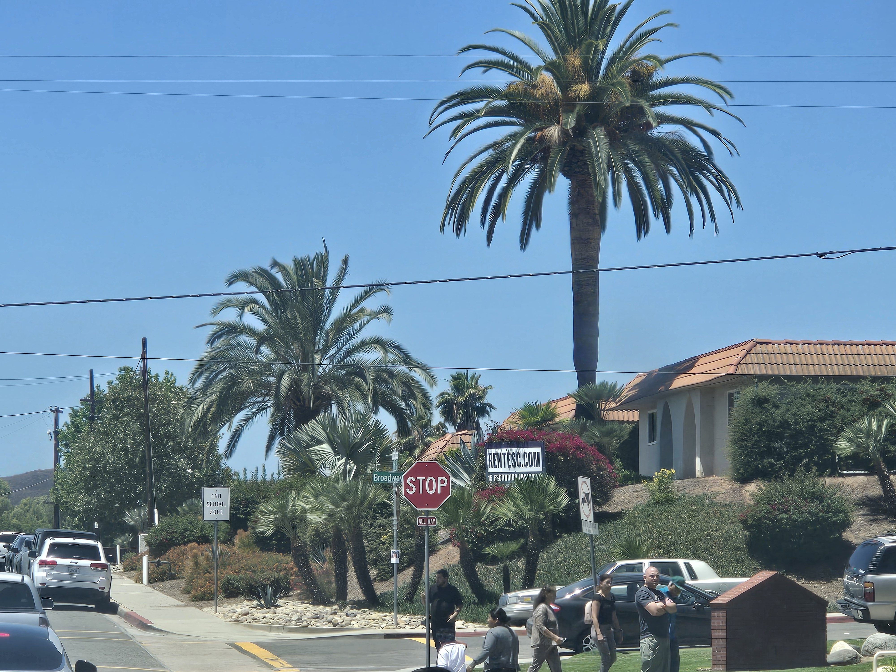
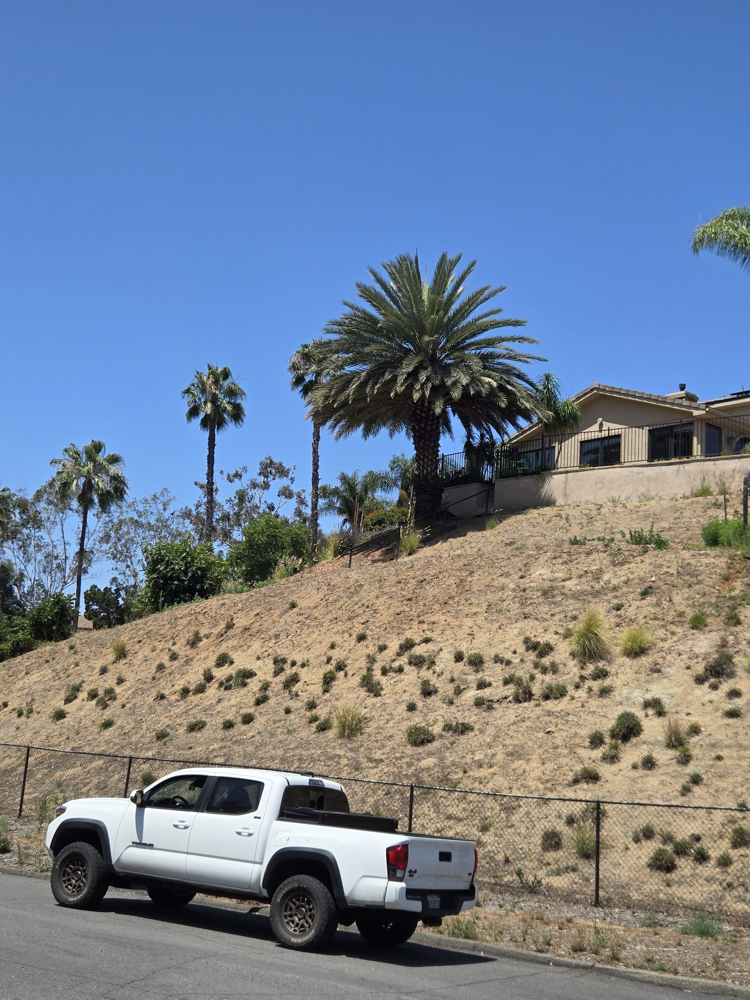
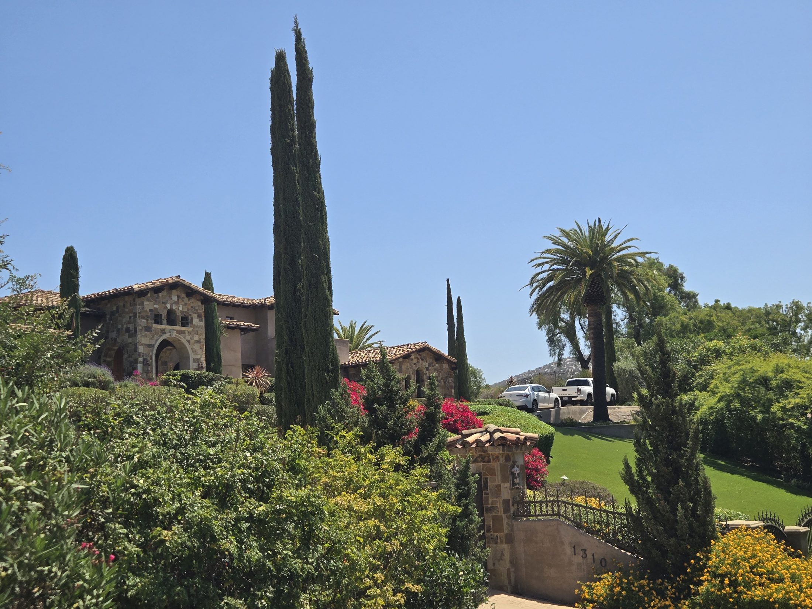

Owner-performed care for mature Canary Island Date Palms — including quarterly fertilization, monitoring, watering-in, and preventative treatment when appropriate.
Mature CIDPs are iconic, valuable, and difficult to replace. Our goal is to help homeowners protect the palm assets that define their property.
Send a few photos for a first look, or request a palm assessment for Canary Island Date Palms, SAPW concerns, nutrient decline, and quarterly palm stewardship.
Canary Island Date Palms, often called CIDPs, are among the most recognizable mature palms in San Diego landscapes. They add scale, permanence, character, and curb appeal — especially on older properties, estate landscapes, and homes where mature palms frame the entire setting.
A mature Canary Island Date Palm can represent decades of growth. Once a large palm begins to decline, replacement is not simple, fast, or inexpensive. That is why proactive care matters.
San Diego Palm Protection focuses on helping homeowners preserve these signature palms through consistent care, nutrition, monitoring, and awareness of local palm health threats including South American Palm Weevil concerns.

Many serious palm issues begin subtly. Consistent observation helps homeowners notice changes before decline becomes advanced.
Thinning crowns, shrinking canopies, brown fronds, and reduced new growth can indicate stress, nutrient problems, or other health concerns.
Abnormal center growth, stunted spear leaves, or a collapsing crown should be taken seriously, especially in mature Canary Island Date Palms.
South American Palm Weevil is a major concern for Canary Island Date Palms in Southern California. Prevention and monitoring matter.
If a mature Canary Island Date Palm starts looking different, it is better to document symptoms early. Photos over time, monitoring, and professional care can help guide next steps.
Our quarterly palm care plans are designed for homeowners who want their mature palms consistently protected, monitored, and cared for year-round.
Typical investment for quarterly palm care is $350–$500 per visit, depending on palm size and treatment needs. One-time palm assessment and treatment visits start at $750.
View Palm Care ServicesWe regularly observe mature Canary Island Date Palms throughout Escondido, Poway, Rancho Santa Fe, Olivenhain, Encinitas, and surrounding North County communities. In many of these landscapes, mature palms are not background plants — they are central visual assets.
From historic neighborhoods with decades-old palms to larger properties where specimen palms frame the entire landscape, consistent care helps protect the character and long-term value these palms provide.



Canary Island Date Palms are especially important to monitor because they are a known target of South American Palm Weevil. By the time major symptoms are obvious, intervention can become more difficult.
Preventative care, local awareness, and regular observation are part of a long-term strategy for homeowners who want to protect mature palms before serious decline becomes visible.
Learn About Local SAPW ConcernsLearn more about mature palm care, local field observations, and San Diego Palm Protection services.
Text or email a few photos of your palm or yard.
📞 Call or Text 262-492-3135